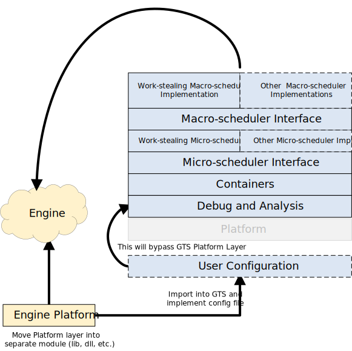

- Generated by
 1.8.18
1.8.18
|
Games Task Scheduler (GTS)
A multi-processor scheduling framework for games engines
|
This section covers various methods that allow the developer to relace GTS's plaform layer with their own. This is highly useful for expanding the number for plaforms and platform versions that GTS supports.
GTS is divided into the layers diagramed below. The User Configuration region represents the location where the developer can insert their own platform later and replace portions or all of GTS's platform implementation.
User configureation is handled through a user_config.h header. It allows the developer to replace:
user_config.h is consumed in machine.h. The developer can supply a location to thier own configuration file by defining GTS_USER_CONFIG and adding an include.
The static library method requires the developer to separate their engine's platform layer into a static library. The static library is added to GTS and the user_config.h is implmented by the static library.

The build-in-engine method move GTS directly into engines source project. The user_config.h is implmented by the engines source.
The supply-implementation method is the most invasive. The developer will replacing the implementation files of:
Asserts can be hooked with the interface in assert.h.
1.8.18